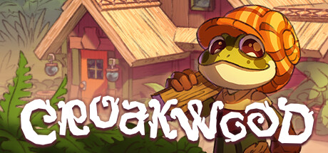

by Yeehaw Partner • Nov 17, 2025

Prepare your mind and wallet for the absolute cutest cozy game (in my humble yet passionate opinion). But, I do come bearing bad news, it's unreleased!! Womp womp. But, fear not, I may not know when it'll be released but I sure do know (and secretly hope * ) it'll most likely get released during 2026 orrrr 2027. Now, let me stop yapping and tell you more about Croakwood.
Croakwood is a creative, relaxed town building simulation game about frogs and nature! Design and create structures, plan and decorate towns, and explore an ancient forest to guide the growth of a charming community of tiny amphibians as they settle into their new life in the lush and wild woods.
Now, some more good news are that they'll "eventually have
a few ways for people to get early versions of the game
before the real launch." That's AWESOME news!!
Texel Rapor, the game's developer, has also said that
they'll do one or multiple playtests on Steam that will be
available to a limited number of people who are willing to
help test the game and provide feedback. And ofc, later
towards the release of the game there'll be a demo that
we can all access.
If you want to help with testing the game before release
you can register for it now on
Steam.
Anddd if you want to check out their other game,
Parkitect
, in the meanwhile, it's available on steam.
So, I recommend you stay tuned. You can do this either
through Steam, or
Texel Raptor's website.
*Act like you didn't read this.